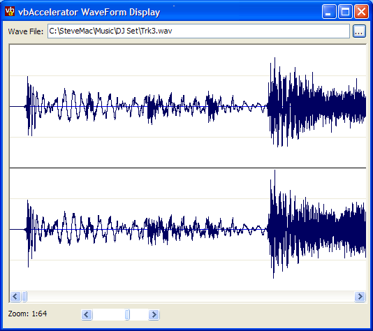
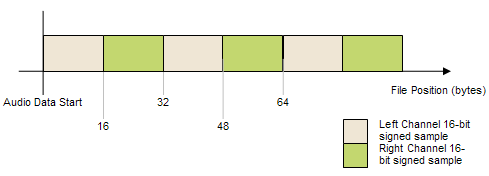

VB5 WaveViewer (61K)
VB5 WaveViewer (61K)
 VB6 WaveViewer (56K)
VB6 WaveViewer (56K)
 16 Apr 2004
16 Apr 2004
First Posted
 Adding Scroll Bars to Forms, PictureBoxes and User Controls
Adding Scroll Bars to Forms, PictureBoxes and User Controls
 Subclassing Without The Crashes
Subclassing Without The Crashes

Wav File Viewer Control
A buffered reader and control for reading and displaying 16bit WAV Stereo Files
This article demonstrates how to read and display a 16-bit Stereo WaveForm using a memory buffer and Multimedia file I/O. Good performance and ease of use is achieved by using SAFEARRAYs to make a memory buffer look like an array in VB. The sample is currently limited to stereo 16-bit wave files, but the same techniques can be applied easily to mono and/or 8-bit files, and, with a bit more effort, to 24-bit files.
Reading WAV Files
A WAV File consists of series of headers chunk which describes the data followed by the data itself. Whilst the format probably isn't too complex there are a series of multimedia I/O API calls you can use to interpret the information. Another useful aspect of the multimedia I/O calls is that they also provide caching of the data as it is read, which can greatly improve performance of the application.
Typically, you need to first find the "WAVE" header and then the "fmt" sub-header chunk. This then provides the format of the samples in the WAV file (i.e. whether the file has 8, 16 or 24 bits per sample, the sampling frequency and the number of channels of audio). Once that's been located, there is then a "data" chunk which describes the location and size of the audio data itself. Here's a quick overview of the calls you need to make to do this (error handling removing for clarity):
Private m_hMMioIn As Long
Private m_tFormat As WAVEFORMATEX ' waveformat structure
Dim mmckinfoParentIn As MMCKINFO
Dim mmckinfoSubchunkIn As MMCKINFO
Dim mmioinf As MMIOINFO
' Open the Audio File
m_hMMioIn = mmioOpen(sSoundFile, mmioinf, MMIO_READ)
' Find WAVE Header:
mmckinfoParentIn.fccType = mmioStringToFOURCC("WAVE", 0)
lR = mmioDescendParent(m_hMMioIn, mmckinfoParentIn, 0, MMIO_FINDRIFF)
' Find "fmt" sub header
mmckinfoSubchunkIn.ckid = mmioStringToFOURCC("fmt", 0)
lR = mmioDescend(m_hMMioIn, mmckinfoSubchunkIn, mmckinfoParentIn, MMIO_FINDCHUNK)
' Get format info
mmckinfoSubchunkIn.ckid = mmioStringToFOURCC("fmt", 0)
lR = mmioDescend(m_hMMioIn, mmckinfoSubchunkIn, mmckinfoParentIn, MMIO_FINDCHUNK)
sFormat = String$(50, 0)
lR = mmioReadString(m_hMMioIn, sFormat, mmckinfoSubchunkIn.ckSize)
lR = mmioAscend(m_hMMioIn, mmckinfoSubchunkIn, 0)
CopyMemoryFromString m_tFormat, sFormat, Len(m_tFormat)
' Check format here in m_tFormat
' Find the data chunk:
mmckinfoSubchunkIn.ckid = mmioStringToFOURCC("data", 0)
lR = mmioDescend(m_hMMioIn, mmckinfoSubchunkIn, mmckinfoParentIn, MMIO_FINDCHUNK)
' Get the location of the start of the data chunk
m_lDataOffset = mmioSeek(m_hMMioIn, 0, SEEK_CUR)
' mmckinfoSubchunkIn.ckSize is the size of the data chunk
You can refer to the download for the API declares and the intermediate MMCKINFO and MMIOINFO structures, which you don't normally interact with much. The WAVEFORMATEX structure is probably one that you will use:
Private Type WAVEFORMATEX wFormatTag As Integer nChannels As Integer nSamplesPerSec As Long nAvgBytesPerSec As Long nBlockAlign As Integer wBitsPerSample As Integer cbSize As Integer End Type
wFormatTag specifies the type of audio. Although in theory multiple formats are allowed (and some 133 formats are defined in the Windows headers), this article only considers non-compressed WAVE_FORMAT_PCM (I'm not sure why these formats are described as Pulse-Code Modulated, since PCM refers to the technique of rendering audio using a 1-bit stream, whereas the files themselves always appear to be encoded as n-bit samples).
nChannels and wBitsPerSample define the number of audio channels and the bits per sample respectively. Finally, nSamplesPerSec defines the sampling frequency, which is typically one of the commonly used sampling rates (8,000; 11,025; 22,050; 44,100; 48,000 and 96,000). The other fields are not normally required and can be derived for non-compressed WAV data:
- nBlockAlign = nChannels * wBitsPerSample / 8
- nAvgBytesPerSec = nSamplesPerSec * nBlockAlign
- cbSize - ignored.
Once you've read the header, you can start using the WAV data.
Using the Data in a WAV File
16-bit stereo WAV files are particularly easy to work with because in VB the WAV format the buffer simply consists of a series of L-R 16 bit signed integer pairs. 8-bit files are also easy to work with for the same reason.
Organisation of sample data in a 16-bit Uncompressed Stereo WAV File
The more modern 24-bit format will be more painful (at least in VB) because there is no natural way to represent a signed 24-bit value. I don't have any examples, but presumably the values are not written out as 32-bit values with a redundant 8 bits for file size reasons, so therefore each sample will represent three bytes. Presumably then you have to read the file using a byte array and somehow decode each three bytes into a signed long value, but this is a pain since &H0 is 0, &HFFF; is 2^12 but &H1000 is -2^12 and &HFFFFFF is -1.
In order to make the data easy to use in VB, we can make it look like an array in VB. An integer array with two dimensions, the first representing each stereo sample pair and the second representing left/right makes it easy to use the data. Any data buffer in memory can be made to look like an array in VB using the COM SAFEARRAY API (more details on this technique are provided in the article True Colour DIBSections). This code demonstrates how this can be done using the supplied cWavReader class to wrap up the I/O access to the Wave Data:
Private Declare Sub CopyMemory Lib "kernel32" Alias "RtlMoveMemory" ( _
lpvDest As Any, lpvSource As Any, ByVal cbCopy As Long)
Private Type SAFEARRAYBOUND
cElements As Long
lLbound As Long
End Type
Private Type SAFEARRAY2D
cDims As Integer
fFeatures As Integer
cbElements As Long
cLocks As Long
pvData As Long
Bounds(0 To 1) As SAFEARRAYBOUND
End Type
Private Declare Function VarPtrArray Lib "msvbvm60.dll" Alias "VarPtr" ( _
Ptr() As Any) As Long
Public Sub Process(reader As cWavReader)
Dim tSA As SAFEARRAY2D
Dim bMoreData As Boolean
Dim iSample As Long
' Prepare SAFEARRAY which represents the WAV
' data as 2D array of integers:
With tSA
.cbElements = 2
.cDims = 2
.Bounds(0).lLbound = 0
.Bounds(0).cElements = reader.ReadBufferSize
.Bounds(1).lLbound = 0
.Bounds(1).cElements = 2
End With
' Loop through all of the data:
bMoreData = True
Do While bMoreData
' Read the next chunk, returns False if no
' more data after this read:
bMoreData = reader.Read
' Point the integer array to the data:
tSA.pvData = m_cWAVRead.ReadBufferPtr
CopyMemory ByVal VarPtrArray(iWav()), VarPtr(tSA), 4
' Loop through each sample in the buffer (note
' that ReadSize may be less than ReadBufferSize)
For iSample = 0 To reader.ReadSize - 1
' Get next L/R sample pair:
iLeft = iWav(0, iSample)
iRight = iWav(1, iSample)
' Process left/right here:
Next iSample
Loop
' Clear up the 'array' so VB doesn't get confused
CopyMemory ByVal VarPtrArray(iWav()), 0&, 4
End Sub
With an appropriate complementary "cWavWriter" class, adding echo effects, finding periods of "silence", peak normalisation, compression, amplitude modulation, fades, reversing the waveform and so on are all things that are easy to achieve here. Mad mathematicians may also want to experiment with more interesting stuff such as parametric EQ, time-stretching, spectrum adjustment, convolved reverbs and granular synthesis...
About the Control
The control provided with the download provides a Wave form viewer which works in a similar way to the one found in SoundForge. The zoom level on the waveform can be configured from showing individual samples (with rectangles highlighting each sample point if the zoom-in is 8:1 or above) up to showing 16,384 samples per pixel (for a 1280 pixel-wide control showing a CD-quality wave, this equates to 80Mb data or around 8 minutes of music).
The performance is generally fine, however, with long audio samples at high zoom-outs (generally more than 2048 samples per pixel) you'll find it gets a bit slow. Most real-world applications solve this problem by buffering the waveform data for larger files. Buffering isn't too difficult to add to the control.
Conclusion
This sample demonstrates how to read the Waveform of a stereo 16 bit WAV file in a performant way using VB. Although the current implementation only works with stereo 16-bit files, it should be adaptable to mono and/or 8 bit files easily, and with some work to 24-bit files.